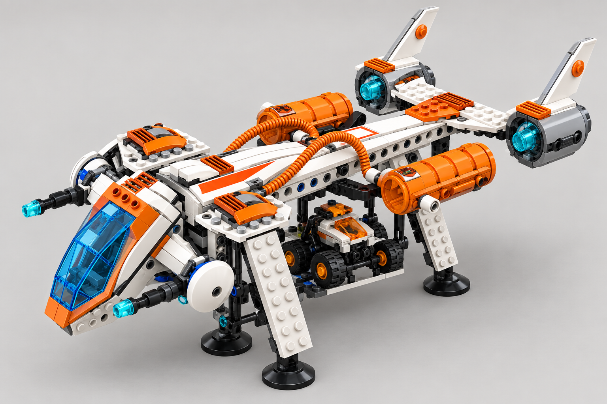
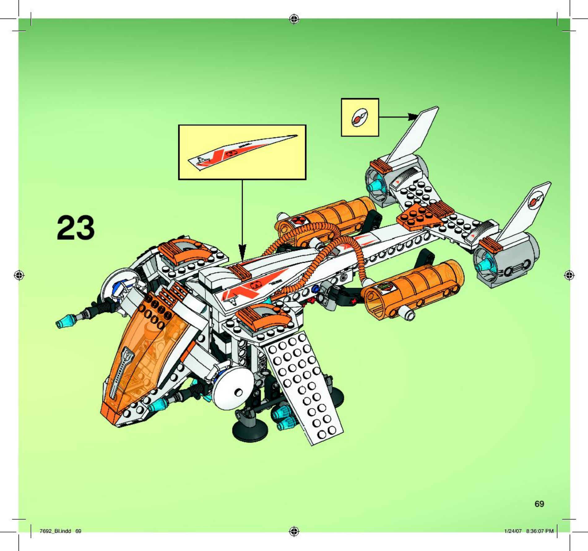

Видимі адаптації
- Відкрита люлька лишає вантаж видимим та незалежним.
- У тій самій люльці перевозяться Crew, Rover, T3-Trike або Claw-Tank.
- Чотири випромінювачі — на літаку, не на вантажі.
Повітряний транспорт із видимою вантажною люлькою
Ігровий вигляд · вантаж лишається видимим під фюзеляжем


ДЖЕРЕЛО → TARGETLEGO 7692 зберігає силует; ігрова ціль показує Mission Systems і відкриту люльку для окремого вантажу.
Зображення — адаптаційна візуалізація T083, не офіційне фото й не виробнича модель.
Інструкція LEGO, с. 70–71, показує незалежний rover та рух вантажної люльки. Саме перенесення інших дозволених ігрових вантажів є адаптацією.
Stable ID: unit.astronauts.mx71_recon_dropship · Design Spec · Маніфест джерел і походження target · PNG цього огляду.
Перевірка: ./tools/verify.sh --targeted design-package — PASS; маніфест, хеші й локальні посилання — PASS. Гілка codex/m85-t083, локальні незлиті зміни.
Зазори для конкретних вантажів, виробнича геометрія, LOD і читабельність з камери гри лишаються перевірками T084/T086.
{kind=link}
{kind=link}